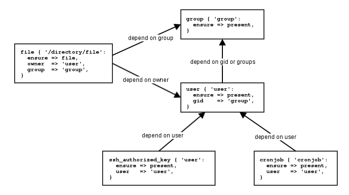
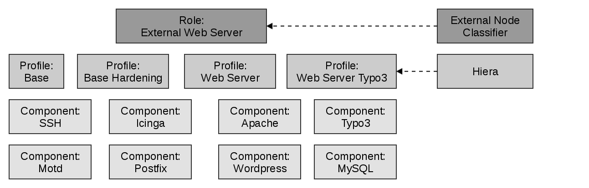

| z, ? | toggle help (this) |
| space, → | next slide |
| shift-space, ← | previous slide |
| b | blank screen |
| d | toggle debug mode |
| ## <ret> | go to slide # |
| c, t | table of contents (vi) |
| f | toggle footer |
| g | toggle follow |
| r | reload slides |
| n | toggle notes |
| p | run preshow |
| P | toggle pause |
| s | choose style |
Fundamentals for Puppet
created by NETWAYS GmbH
Original Author: Dirk Götz, Lennart Betz
Fundamentals for Puppet Training
by NETWAYS GmbH (www.netways.de)
Provided by:

www.netways.de - github.com/NETWAYS - @netways
Fundamentals for Puppet Training
by NETWAYS GmbH (www.netways.de)
For other events and trainings hosted by NETWAYS see our
Fundamentals for Puppet Training
by NETWAYS GmbH (www.netways.de)
Fundamentals for Puppet Training
by NETWAYS GmbH (www.netways.de)
This training will introduce the basic functionality behind Puppet's abstraction layer, the structure of Puppet modules and development from local prototype to deployment on Puppet Master. Furthermore usage of modules provided by the Puppet forge and adding a graphical interface for monitoring the infrastructure is covered.
The material is based on Puppet 4.
This training will introduce the basic functionality behind Puppet's abstraction layer, the structure of Puppet modules and development from local prototype to deployment on Puppet Master. Furthermore usage of modules provided by the Puppet forge and adding a graphical interface for monitoring the infrastructure is covered.
This chapter will cover the concept, architecture and functionality behind Puppet and Facter. It will also show the difference between the Open Source and Enterprise version.
In this chapter the basic ressource types are introduced and language constructs like dependencies, resource defaults, variables and variable types and programmatic constructs. These resource type will be combined to classes and modules which will be used in the common roles-profiles-pattern.
Last but not least we will focus on the Puppet Master. The modules developed will be deployed on it using git, assigned to nodes and parameterized using hiera. Difference between the Puppet Master and Puppet Server will be shown before modules provided by the Puppet forge will be used to extend it with the PuppetDB as reporting backend and Puppet Explorer as graphical interface.
Fundamentals for Puppet Training
by NETWAYS GmbH (www.netways.de)
Work together! Be part of the training team and find solutions together.
Additional documentation in your browser at https://docs.puppet.com/puppet/
Fundamentals for Puppet Training
by NETWAYS GmbH (www.netways.de)
Fundamentals for Puppet Training
by NETWAYS GmbH (www.netways.de)
Fundamentals for Puppet Training
by NETWAYS GmbH (www.netways.de)
Configuration management is a systems engineering process for establishing and maintaining consistency of a product performance, functional, and physical attributes with its requirements, design and operational information throughout its life.
Wikipedia defines configuration management as a systems engineering process for establishing and maintaining consistency of a product's performance, functional, and physical attributes with its requirements, design and operational information throughout its life.
So configuration management software is used to describe a desired state, configure a system to be in this state and recognize drifts from this state to revert them.
Fundamentals for Puppet Training
by NETWAYS GmbH (www.netways.de)
There has always been some type of configuration management but all solutions not designed for it have some shortcomes.
This approach means literally to log in manually in every system and repeat the same configuration change which will not scale and realistically always create some drift.
Using one template to create a new node will result in a consistent installation but keeping this consistency over different versions of this image is difficult. Difficulty will grow with the number of images need for different environments, projects, tools and roles.
Script written to solve one problem will be difficult to reuse for other requirements. Also rerunning the same script could be difficult because of changed conditions. Maintenance typically only done by the original author will prevent further improvments.
Requires all resources to be managed in this way which makes small changes much more work intensive and slower.
Fundamentals for Puppet Training
by NETWAYS GmbH (www.netways.de)
Describe the desired state and let Puppet enforce it
Fundamentals for Puppet Training
by NETWAYS GmbH (www.netways.de)
Build configuration from small components
The domain specific language of Puppet allows to specify and manage your infrastructure with defined models instead of procedures. With this DSL complete services and applications can be modelled in a reusable and composable way which supports multiple plattforms. Because of the central management you can make changes once and then test and deploy them in a consistent fashion to multiple nodes.
Puppet (the company behind Puppet formerly Puppet Labs) hosts the Puppet Forge which contains thousands of freely downloadable modules for resources, applications and services managed by the community: http://forge.puppet.com
Fundamentals for Puppet Training
by NETWAYS GmbH (www.netways.de)
Fundamentals for Puppet Training
by NETWAYS GmbH (www.netways.de)
As you can see there are many different ways to get Puppet installed on your system.
The Puppet Collection provides you with tested and complementary versions of all the tools required for running Puppet 4 in one entire package provided by the vendor. But this also includes an additional version of openssl for example which has to be considered individually from the one included in your operating system when dealing with the system security in mind.
The same goes for Puppet Enterprise which is very similar but requires a subscription and in exchange provides support the vendor.
Puppet 4 is only included in the default repository by Fedora for now, all other distributions still include Puppet 3.
If the version of Puppet 3 included in your preferred distribution is older than the one you are required to run you can also switch to the repository provided by Puppet for Puppet 3 which will included the latest version. These packages are not all-in-one packages instead they depend on the operating system libraries and tools.
In this training we will use the Puppet Collection because we want to demonstrate the new features. This is no recommendation for the all-in-one packaging format! For your environment decide on your own which package maintainer to trust and which version is required for your tool stack and which best suits your needs.
Fundamentals for Puppet Training
by NETWAYS GmbH (www.netways.de)
Puppet itself is completly Open Source, but the Enterprise version adds to this Open Source tool.
Open Source Packages are widely available, but some plattforms have a limited community so getting packages for example on AIX is difficult where Puppet Enterprise provides their complete toolstack for all plattforms they support in the same fashion. Also Puppet Enterprise Console adds an Webinterface for assigning configuration and view reports, but there are alternate frontend like Puppet Explorer or Foreman.
For the additional components not always is an alternative available but some can be build from the same components used in Puppet Enterprise and none of it is required. Puppet Support also includes support for specific modules but is also limited to those and does not cover your own code. Also they cooporate with other vendors to create solutions for automated provisioning on their plattform, but Foreman is more powerfull and supports more plattforms. So vendor support is only available for the Enterprise version, while Open Source support is available from different sources covering sometimes more or at least other components.
At the end it is your choice if you want to use Puppet Enterprise and can take some benefit of the commercial version or if you use the Open Source version and add components you require and perhaps buy a support contract from a third party.
Fundamentals for Puppet Training
by NETWAYS GmbH (www.netways.de)
puppet-agent in the same version as the master runs.Fundamentals for Puppet Training
by NETWAYS GmbH (www.netways.de)
You can also run it on command line to list facts
augeas => {
version => "1.4.0"
}
disks => {
vda => {
size => "10.00 GiB",
size_bytes => 10737418240,
vendor => "0x1af4"
}
}
...
system_uptime => {
days => 0,
hours => 2,
seconds => 8378,
uptime => "2:19 hours"
}
timezone => UTC
virtual => kvm
Facter returns key value pairs named facts. In older versions these were simple string representations, newer versions also structured facts are possible which means a array or hash is returned.
The facts are used as Puppet's inventory tool and are generated before requesting a catalog from the master. The master can use facts in conditionals or templates during catalog compilation but it is impossible to change its values during a run or change the agents behaviour directly on the node based on facts.
Facter includes many different built-in facts and allows to add additional facts in several ways which allows to provide them by Puppet modules requiring this information.
Fundamentals for Puppet Training
by NETWAYS GmbH (www.netways.de)
Fundamentals for Puppet Training
by NETWAYS GmbH (www.netways.de)
Puppet is all about abstraction. It defines its own Domain Specific Language which allows for an abstract description of resources. This tries to be as human readable as possible so typically getting a basic understanding of Puppet code is possible without further knowledge in Puppet because of this it is often referenced as "Executable Documentation". Another term often used is "Infrastructure as Code" referring to code being always the best documentation and Puppet code can manage the complete infrastructure.
A terminology from mathematics or computer science called "Idempotence" is also often used meaning for Puppet that Puppet Code can be applied multiple times without further changing the result beyond the initial application. This is done by only defining the desired state and Puppet will determine internally how to get to this state.
Fundamentals for Puppet Training
by NETWAYS GmbH (www.netways.de)
Fundamentals for Puppet Training
by NETWAYS GmbH (www.netways.de)
Puppet runs on a central server as master which includes a internal certificate authority. These certificates are distributed to the agents so the master can authenticate their connections and then serve a compiled catalog with the desired configuration state on request. If managing static files the master also acts as file server. If configured to do so the master takes reports from the agents and forwards them to report handlers like sending them via mail or uploading them to a frontend like the Puppet Explorer.
The Puppet master exists in two different implementations. The longer existing version is vanilla Ruby which can be run with Ruby's own webserver or any webserver supporting executing of Ruby code but is typically run with Apache and Passenger. The newer alternative is Puppet Server which is jRuby executed in a JVM as the vendor's approach on increasing the performance. More on the differences later on.
Running Puppet in master mode is supported on most Linux distributions.
Fundamentals for Puppet Training
by NETWAYS GmbH (www.netways.de)
The Puppet agent runs as service on all managed nodes and requests periodically the desired configuration state from the Puppet master for this it sends information about itself so called facts to the master so it can determine the configuration state. The retrieved configuration state as a catalog is then enforced. Configuration changes and metrics are then reported back to the master.
The agent is supported on most Linux distributions, Windows, Solaris, HP-UX, AIX, Mac OS X and some Network devices.
Fundamentals for Puppet Training
by NETWAYS GmbH (www.netways.de)
The Puppet apply command combines master and agent functionality which is useful for development and local testing or master-less setups.
It takes a file containing Puppet code as input, then gathers information about the system using facter to compile a catalog and last but not least enforces the configuration. It can also run in simulation mode which only notifies about required changes instead of enforcing it.
To reduce complexity for now we will start developing Puppet code and use apply to test it and only move later to a master agent setup.
Running the puppet commands as unprivileged user works as long as you only manage resources the unprivileged users can access. So typically it will require root privileges because you want to manage packages, users and so on only root is allowed to manage.
Fundamentals for Puppet Training
by NETWAYS GmbH (www.netways.de)
Managing a user without Puppet means managing the existence of the user and its attributes, managing groups required for group membership and existence and permissions of the home directory.
This task is quite simple but requires to know which tools you will reliable find on your systems. Some distributions install useradd, others adduser for creating a user. Then you have to know the options to provide, e.g. what was the difference of -g and -G, which can get more complicated if using multiple systems, e.g. modifying additional group membership -a -G newgroup works on RHEL, -A newgroup on SLES and on AIX you have to provide a list of all groups to -G. Also managing a user between different states will require different tools like useradd for creation, usermod for changes on existing users and userder for deletion.
This will all increase the challenge of automation of user management. It has to be scripted in a readable and maintainable way including error handling and logging. If your goal is the support of multiple plattforms it increases complexity and limits options.
Fundamentals for Puppet Training
by NETWAYS GmbH (www.netways.de)
The same task with Puppet
user { 'icinga':
ensure => present,
gid => 'icinga',
groups => ['icingacmd'],
home => '/var/spool/icinga',
shell => '/sbin/nologin',
managehome => true,
}
The same task is very easy with Puppet. You only have to describe the user in Puppet Domain Specific Language and the run Puppet to enforce it. Puppet will create the user if it does not exist and make adjustments if the user exists like attributes which do not match the desired state.
Fundamentals for Puppet Training
by NETWAYS GmbH (www.netways.de)
Fundamentals for Puppet Training
by NETWAYS GmbH (www.netways.de)

Fundamentals for Puppet Training
by NETWAYS GmbH (www.netways.de)
aix appdmg apple apt aptitude aptrpm blastwave dnf dpkg fink freebsd gem hpux macports nim openbsd opkg pacman pip3 pip pkg pkgdmg pkgin pkgng pkgutil portage ports portupgrade puppet_gem rpm rug sun sunfreeware up2date urpmi windows yum zypper
holdable install_options installable package_settings purgeable reinstallable uninstall_options uninstallable upgradeable versionable virtual_packages
Puppet decides which provider is available by testing for required binaries. Afterwards it will lookup if the providers support all the features required for the desired configuration. If still multiple providers fit it will use the one marked as default for a specific set of facts which is typically the operatingsystem or osfamily, sometimes in relation to the release version.
So for example to manage a package resource on CentOS it will find rpm and yum and perhaps some like gem for ruby or pip for python. If now a operating system package should be installed rpm and yum can solve this task, but yum will be used because it is default for osfamily redhat. If a package should be purged only yum would match because rpm does not provide this feature.
For more details have a look at the resource type reference in the documentation: https://docs.puppet.com/puppet/latest/reference/type.html
Fundamentals for Puppet Training
by NETWAYS GmbH (www.netways.de)
Setting attributes will change state using available provider
# puppet resource package vim-enhanced
package { 'vim-enhanced':
ensure => 'purged',
}
# puppet resource package vim-enhanced ensure=present
Notice: /Package[vim-enhanced]/ensure: created
package { 'vim-enhanced':
ensure => '7.4.160-1.el7',
}
Puppet provides a command to directly interact with the Resource Abstraction Layer. puppet resource can be
used to query all or one resource of a specified type which will return current state represented as Puppet
code. It furthermore allows to set attributes to a desired state and then Resource Abstraction Layer will
find an available provider to enforce the state.
Fundamentals for Puppet Training
by NETWAYS GmbH (www.netways.de)
Fundamentals for Puppet Training
by NETWAYS GmbH (www.netways.de)
Fundamentals for Puppet Training
by NETWAYS GmbH (www.netways.de)
Puppet includes in its installation some core resource types. Most of those are realy basic types like user, group, file, package or service, but some are very specific like the Nagios objects or Solaris zones, zfs and zpool.
Additional ones can be provided by modules like file_line from puppetlabs/stdlib, ini_setting from puppetlabs/inifile, mysql_database from puppetlabs/mysql and vcsrepo from puppetlabs/vcsrepo.
A list of all known resource types can be generated by with the puppet describe command:
# puppet describe --list
Documentation of a resource type can be displayed with this command, too. Append the parameter -s
to only get a summarized version.
# puppet describe <type> [-s]
# puppet describe user -s
To render the documentation in some other format use the puppet doc command like:
# puppet doc -r type
Fundamentals for Puppet Training
by NETWAYS GmbH (www.netways.de)
Puppet is as much about syntax as about style
type { 'title':
ensure => present,
attribute => 'value',
other_attribute => $variable,
another_attribute => "${another_var}.txt",
}
file { '/tmp/test':
ensure => file,
owner => 'root',
group => 'root',
mode => $file_mode,
content => "Hello, ${user}!",
}
Above you can see the basic syntax of a resource in Puppet. First one shows the general schema, second one a example for a file resource.
The type defines which type of resource is managed, e.g. a file resource, this defines the allowed attributes. The resource definition is then put in curly brackets. The title is important for naming the resource and is used to ensure uniqueness. As a simple string the title is put in single quotes. The title is always follow by a colon. A list of attribute value pairs follows next, always indented by two whitespaces (by style guide) and separated by an arrow (which should be aligned by style guide).
There is no particular order required, but if an attribute ensure exists it should be the first, so a reader can easily recognize if a resource is created or removed. The value of the attribute should be quoted in single quotes if it is a simple string or in doublequotes if it includes a variable. No quoting is used for variables or barewords like the state of ensure or a boolean. Resource attributes must have a trailing comma, including the last one which is again only by style guide and not required by syntax.
Every resource has a so called namevar attribute if not explicitly set the title will be used for its value. In most cases it is simply the name attribute, but the file resource for example uses the path attribute as namevar.
So the basic syntax is very simple, but Puppet is as much about syntax as about style because it is intended to be easily readable. Because of this the vendor provides a style guide: https://docs.puppet.com/guides/style_guide.html
Fundamentals for Puppet Training
by NETWAYS GmbH (www.netways.de)
Puppet's user management is primary designed for managing system users or a small amount of administrative users. User management is still done best by central authentication services like ldap and kerberos.
The file extension for files containing Puppet code is .pp, those files are called manifests. A syntax validaten for this files can be done with "puppet parser validate".
Fundamentals for Puppet Training
by NETWAYS GmbH (www.netways.de)
The user attribute groups is an array. Puppet uses the same notation for array like ruby, a comma separated list of elements in square brackets.
Fundamentals for Puppet Training
by NETWAYS GmbH (www.netways.de)
Make sure to use the proper attributes of the ssh_authorized_key resource. Type, key and comment are separated!
Fundamentals for Puppet Training
by NETWAYS GmbH (www.netways.de)
File permissions on files on "/etc/sudoers.d" is as important as syntax. Make sure to have a session as "root" open before doing any changes because you can deny access via sudo at all by failures.
Fundamentals for Puppet Training
by NETWAYS GmbH (www.netways.de)
Puppet 4 applies unrelated resources in the order of declaration only taking implicit dependencies into account. The default ordering before Puppet 4 was hash based which was random but predictable accross agent runs and systems. The configuration also allows to set it explicitly to random which always randomizes the order of unrelated resources on every run. This mode is helpful to find necessary dependencies which are not declared explicitly.
Fundamentals for Puppet Training
by NETWAYS GmbH (www.netways.de)

Fundamentals for Puppet Training
by NETWAYS GmbH (www.netways.de)

Fundamentals for Puppet Training
by NETWAYS GmbH (www.netways.de)

Fundamentals for Puppet Training
by NETWAYS GmbH (www.netways.de)
Explicit Dependencies can be defined in four different ways by adding the corresponding metaparameter. This metaparameter attributes exist for all resources.
Syntax examples will be shown on the next pages.
Fundamentals for Puppet Training
by NETWAYS GmbH (www.netways.de)

Fundamentals for Puppet Training
by NETWAYS GmbH (www.netways.de)

Fundamentals for Puppet Training
by NETWAYS GmbH (www.netways.de)
Allows to reference other managed resources
Type['title']
Service['sshd']
Another new syntax was introduced in the example for dependencies: the reference of a resource.
The syntax schema is the resource type as uppercase and the title in square brackets for example
Service['sshd'].
Fundamentals for Puppet Training
by NETWAYS GmbH (www.netways.de)
The chaining arrow syntax is an alternative syntax for explicit dependencies which works great with references. According to the style guide you should prefer the metaparameters but in case of interdependent or order-specific items it is quite helpful.
In these cases using the references to declare the dependencies outside of the declaration of resources increases the readability and also allows to change ordering depending on parameters.
Also if both directions exist you should avoid the arrows pointing backwards because of readability and stick to those pointing left to right.
Fundamentals for Puppet Training
by NETWAYS GmbH (www.netways.de)
This design of Puppet code is known as Package-File-Service pattern. If a service depends on multiple files they are typically grouped in a separate class and dependencies are enforced on this level. We will do this later after introducing the concept of classes.
Fundamentals for Puppet Training
by NETWAYS GmbH (www.netways.de)
Use full path or provide path as attribute
exec { 'command': path => '/usr/sbin/:/sbin/', refreshonly => true, timeout => 60, }
The exec resource is used to execute commands so it should be avoided if possible.
If it is required use an attribute to ensure idempotence. The "creates" attribute points to a file which is created by the command and the command will not be executed as long as the file exists. "Onlyif" or "unless" can be used to run a script before the execution of the defined command and depending of their exit code the command will be executed. "Refreshonly" can be used to execute a command only if it gets a refresh event from another resource.
The command has to be defined with the full path or the attribute "path" has to provide a list seperated by ":" or an array.
Fundamentals for Puppet Training
by NETWAYS GmbH (www.netways.de)
This adjustment is common for services which loose information during restart but not during reload like Apache loosing sessions.
Fundamentals for Puppet Training
by NETWAYS GmbH (www.netways.de)
Type {
attribute => 'value',
}
File {
owner => 'root',
group => 'root',
mode => '0644',
}
Puppet allows you to declare resource defaults to shorten the code and make it more readable. A resource default is declared like a resource only the resource type is uppercase and there is no title given.
The example sets default for owner, group and mode of every file resource in the scope it is declared. Because of being scope wide a resource default should only be declared on the highest or lowest scope. More on scope when we take about variables.
There is one special case for the file resource. If the type is set to directory Puppet will automatically promotes a mode default of "0644" to "0755".
Fundamentals for Puppet Training
by NETWAYS GmbH (www.netways.de)
The optional task is necessary because if one vhost exists in Apache's configuration everything has to managed as vhost, the default configuration will not be used any longer.
Fundamentals for Puppet Training
by NETWAYS GmbH (www.netways.de)
file {
default:
mode => '0600',
owner => 'root',
group => 'root',
ensure => file,
;
'/etc/ssh_host_key':
;
'/etc/ssh_host_dsa_key.pub':
mode => '0644',
;
}
Puppet 4 introduced an alternative block based version allowing to set defaults in a fine granular manor.
Fundamentals for Puppet Training
by NETWAYS GmbH (www.netways.de)
class ssh {
package { 'openssh':
ensure => present,
}
file { '/etc/ssh/sshd_config':
ensure => file,
owner => 'root',
group => 'root',
mode => '0644',
require => Package['openssh'],
}
service { 'sshd':
ensure => running,
enable => true,
require => File['/etc/ssh/sshd_config'],
}
}
In Puppet Classes define a collection of resources. This is used to encapsulate related resources. A good design is to create small classes only containing related resources grouped in a logic that allows to be stack together in multiple ways.
Fundamentals for Puppet Training
by NETWAYS GmbH (www.netways.de)
Fundamentals for Puppet Training
by NETWAYS GmbH (www.netways.de)
To specify the contents and behavior of a class. Defining a class doesn't automatically include it in a configuration; it simply makes it available to be declared.
To direct Puppet to include or instantiate a given class. To declare classes, use the include function. This tells Puppet to evaluate the class and manage all the resources declared within it.
Puppet differentiates between defining and declaring a class. With the class syntax we only defined it, to also declare it we could use the include or contain function or declare it in the same syntax like other resources. The difference between these options will be shown later.
Fundamentals for Puppet Training
by NETWAYS GmbH (www.netways.de)
include Funktion
include apache
class { 'apache': }
Fundamentals for Puppet Training
by NETWAYS GmbH (www.netways.de)
include is idempotence. That mean you can use the include of the same class several times in your code.
include apache include apache
Fundamentals for Puppet Training
by NETWAYS GmbH (www.netways.de)
Fundamentals for Puppet Training
by NETWAYS GmbH (www.netways.de)
$variable = 'value'
$httpd_confdir = '/etc/httpd/conf.d'
In Puppet variables are prefixed with '$' and can be used in expressions, functions and resource attributes including the title. In variable names only uppercase and lowercase letters, numbers and underscores are allowed. The names have to start with lowercase letter or underscore indicating internal use only. Also the style guide does not allow uppercase letters for inconsistency in style.
They have to be defined before using them and this definition depends on the scope also Puppet 4 introduced an optional data type system for some specific use cases. In older versions all data types were simply handled internally and converted automatically if possible. More on scope and data types on the next pages.
One very important thing about variables in Puppet to know is that they are actually constants as you can not reassign values.
Fundamentals for Puppet Training
by NETWAYS GmbH (www.netways.de)

Fundamentals for Puppet Training
by NETWAYS GmbH (www.netways.de)
$httpd_confdir
$::osfamily
$apache::params::confdir
Puppet allows to access variables in a specific scope. If the shortname of a variable is used it will be using the value defined in the Local Scope. If the variable is not defined in Local Scope it will searched in a static scope build on inheritance of the classes, node and top scope. This is much more predictable then the dynamic scope used in older versions creating a scope graph by inheritance and declaration.
Facts provided by Facter are available from the Top Scope and can be used like every other variable.
Fundamentals for Puppet Training
by NETWAYS GmbH (www.netways.de)
Puppet 4 introduced a data type system which allows the user to define a variable of a specific data type. In older versions all data types were simply handled internally and converted automatically if possible, if you do not specify a data type for a variable in Puppet 4 it will still use this behaviour. These data types can only be used parameter lists, match expressions, case statements and selector expressions and not for variables.
There are the typical simple data types like Strings, Numbers, Booleans, Arrays and Hashes and others are more specific to Puppet. In addition there are abstract data types which can be used to enforce a more specfic value or allow to validate more flexible without having to deal with something weird.
All details on https://docs.puppet.com/puppet/latest/reference/lang_data.html
Fundamentals for Puppet Training
by NETWAYS GmbH (www.netways.de)
Fundamentals for Puppet Training
by NETWAYS GmbH (www.netways.de)
case statementsif statementsunless statementsPuppet supports four types of conditionals.
Selectors can be used to return values and case, if or unless statements to alter the logic flow of your manifest.
Fundamentals for Puppet Training
by NETWAYS GmbH (www.netways.de)
$apache_package = $::osfamily ? {
'RedHat' => 'httpd',
default => 'apache2',
}
package { 'apache':
ensure => installed,
name => $apache_package,
}
Selectors are good for assigning conditional values to variables like the example above.
You can use it also in other constructs most time at the expense of readability. One of such cases is the use as resource attribute.
package { 'apache':
ensure => installed,
name => $::osfamily ? {
'RedHat' => 'httpd',
default => 'apache2',
}
}
The syntax is the conditional expression followed by the question mark and curly brackets containing any number of matches. The matches consists of a case, the arrow and a value. It should always include a default match if you do not explicitly want Puppet to fail in the case no match is found.
Fundamentals for Puppet Training
by NETWAYS GmbH (www.netways.de)
case $::osfamily {
'RedHat': {
$apache_package = 'httpd'
$apache_confdir = '/etc/httpd'
}
default: {
$apache_package = 'apache2'
$apache_confdir = '/etc/apache2'
}
}
The ideal use of case statements is to set multiple variables at once or to choose different branches of code. In most cases it is more readable then multiple selectors and a complex if or unless statement.
The general form of a case statement starts with the keyword case followed by the control expression and
curly brackets containing matches. The match consists of a case or comma separated list of cases followed
by a colon and some puppet code in curly brackets. The match on strings is case insensitive, so use regular
expressions for case sensitive matches like /Debian|Ubuntu$/. Furthermore it is best practice to provide
a valid default if possible, if not use the function fail to fail catalog compilation or include an empty
default for clarity’s sake.
Fundamentals for Puppet Training
by NETWAYS GmbH (www.netways.de)
Fundamentals for Puppet Training
by NETWAYS GmbH (www.netways.de)
if $ensure == 'present' or $ensure == 'installed' {
package { 'telnet':
ensure => present,
}
} elsif $ensure =~ /^(absent|purged)$/ {
package { 'telnet':
ensure => purged,
}
} else {
fail("${ensure} is not valid")
}
The if statement allows to make a choice in your code based on a truth value.
This can be a simple boolean value (only undef and false evaluate as false),
a conditional expression or regular expression (doing a comparison) or a chain
of expressions (connected by and or or or negating an expression with not.
It can use additional expressions in an elsif and an else for false expressions.
Fundamentals for Puppet Training
by NETWAYS GmbH (www.netways.de)
unless $ensure =~ /^(absent|purged)$/ {
package { 'telnet':
ensure => present,
}
} else {
package { 'telnet':
ensure => purged,
}
}
The unless statement is like a reversed if statement, but does not allow elsif clauses. The style guide does not mention unless statements but typically a if statement is much more readable.
Fundamentals for Puppet Training
by NETWAYS GmbH (www.netways.de)
Fundamentals for Puppet Training
by NETWAYS GmbH (www.netways.de)
Puppet allows to integrate functions into your manifests which will be executed on the Master during Catalog Compilation.
Statements can execute an action like fail which will fail catalog compilation with the provided message which is useful as default in case statements for better failing than providing wrong parameters for an unsupported case.
Rvalue functions return a value like the template function which takes an erb template and returns a string or versioncmp which takes two version and returns "-1" if the first one is less, "0" if both are equal or "1" if the first one is greater.
As with facts modules can include there own functions, for example the module puppetlabs/stdlib mainly exists to provide additional functions.
Fundamentals for Puppet Training
by NETWAYS GmbH (www.netways.de)
Puppet can not only handle static files, with the use of the template or epp function you can handle a file containing dynamic content.
The template function exists in all versions of Puppet and uses Embedded Ruby (erb) for the dynamic parts. Using the erb syntax you can access all variables available in the scope. The template function also can handle multiple templates which will be concatenated.
The epp function is only available in Puppet 4 (or with the future parser in some older versions) and uses Embedded Puppet (epp) instead of Embedded Ruby. Furthermore it does only use the parameters which are passed to it which are required if no default value is set and Puppet will fail then.
Furthermore an inline version of both functions exists which uses a string in heredoc format instead of a template file. But for readability you should avoid this at least for bigger templates.
Fundamentals for Puppet Training
by NETWAYS GmbH (www.netways.de)
<%# Comment not printed in file -%> <% if @variable == true -%> Print this <%= @variable %> <% end -%> <% @values.each do |value| -%> Value is <%= value %> <% end -%>
An erb template consists simply of text and Ruby code embedded with <% and %>. In these lines of code you can access variables from Puppet (prefixed with @ or accessed with the scope function) or local variables (a simple string). Furthermore you can add conditions and iterations like the if and each in the example above. You can also call out to Puppet functions using the scope function. Also note the -%> in some lines which will result in a non printed line.
Fundamentals for Puppet Training
by NETWAYS GmbH (www.netways.de)
Fundamentals for Puppet Training
by NETWAYS GmbH (www.netways.de)
<%- | Boolean $variable = true,
Array $values
| -%>
<%# Comment not printed in file -%>
<% if $variable == true { -%>
Print this <%= $variable %>
<% } -%>
<% $values.each |value| { -%>
Value is <%= value %>
<% } -%>
An epp template consists simply of text and Puppet code embedded with <% and %>. On top of the file you should define the parameters required. If none are defined every parameter is accepted. If a default value is set, the parameter is optional and if not passed to the epp function will fall back to the default. In epp you do not require a special syntax to use Puppet functions instead you can use them in the same ways like in your manifests.
Fundamentals for Puppet Training
by NETWAYS GmbH (www.netways.de)
Fundamentals for Puppet Training
by NETWAYS GmbH (www.netways.de)
$binaries = ['facter', 'hiera', 'mco', 'puppet', 'puppetserver']
$binaries.each |String $binary| {
file {"/usr/bin/${binary}":
ensure => link,
target => "/opt/puppetlabs/bin/${binary}",
}
}
Puppet 4 introduced some iteration functions. Unlike most programming languages where an iteration is a special keyword for a looping construct, Puppet has implemented it as functions that accept a block of code.
The example above shows the each function taking every element of the "binaries" array as String and
creating a symlink for them.
Other examples you can find on the iteration page in the docs: https://docs.puppet.com/puppet/latest/reference/lang_iteration.html
or on the function reference for a specific function: https://docs.puppet.com/puppet/latest/reference/function.html
Fundamentals for Puppet Training
by NETWAYS GmbH (www.netways.de)
Fundamentals for Puppet Training
by NETWAYS GmbH (www.netways.de)
Fundamentals for Puppet Training
by NETWAYS GmbH (www.netways.de)
Modules are a pre-defined structure for encapsulating related configuration which enables the auto-loading of classes, file-serving for templates and files and auto-delivery of custom Puppet extensions. Furthermore it allows for easy sharing with others. for this going to work a modules should be self-contained and should have well defined integration points for other modules to use. It should manage everything required but --more important-- not manage things out of it scope.
For example a web application module should not also manage the database or the webserver because a module doing so would only allow the use of this single web application with one specific database and webserver.
Defining the scope of modules is one of the hardest things to do with Puppet but with some experience it gets easier.
Fundamentals for Puppet Training
by NETWAYS GmbH (www.netways.de)
modulename |-- facts.d <- external facts |-- files <- static files |-- lib | |-- facter <- facts written in Ruby | `-- puppet <- custom functions, types and providers |-- manifests <- Puppet classes |-- metadata.json <- Module description |-- spec <- unit tests |-- templates <- dynamic files in erb or epp syntax `-- examples <- smoke tests
The example above shows the structure of a module. The outermost directory is named like
the module itself and contains a directory for every type of files. If a module does not
provide a specific type of files it does not require the corresponding directory. The file
'metadata.json' is optional and contains the description of the module in a machine readable
format. Some of the descriptions are used by tools, like the dependencies used by the puppet
module command.
In this training we will not cover custom functions and facts and we will only cover smoke tests, no unit tests. Writing such things is covered in "Advanced Puppet".
Fundamentals for Puppet Training
by NETWAYS GmbH (www.netways.de)
Classes in manifests
init.pp
module::example in example.pp
module::example::complex in example/complex.pp
Files in files
Templates in templates
Autoloading of classes is based on the namespace of the classes. The namespace always starts with the modulename and the module's default class has to be named as the module. This default class is located in the modules's init.pp in the manifests directory. Other classes of the module must be named like the file providing them.
# grep ^class apache/manifests/init.pp
class apache (
# grep ^class apache/manifests/package.pp
class apache::package (
# grep ^class apache/manifests/mod/status.pp
class apache::mod::status (
Autoloading also works for static files served by the Puppet Master. Puppet uses its own URL schema you can use as source attribute for files 'puppet:///modules/modulename/filename'.
Furthermore template lookup can use relative pathes for templates provided by a module like 'template(modulename/filename.erb)' or 'epp(modulename/filename.epp)'.
Fundamentals for Puppet Training
by NETWAYS GmbH (www.netways.de)
Fundamentals for Puppet Training
by NETWAYS GmbH (www.netways.de)
class apache (
Enum['running','stopped'] $ensure = 'present',
Boolean $enable = true,
Boolean $default_vhost = false,
Hash[String, String] $vhosts = {},
) {
...
}
In Puppet classes can take parameters to change their behaviour to represent different configurations. The parameters can have a defined data type with Puppet 4 which allows for an easy validation, in Puppet 3 you had to stick to the validate functions provided by puppetlabs/stdlib module.
Keep in mind also with parameters you can only handle one use case on one node because classes are still singletons and can not be applied multiple times with different parameter sets.
Fundamentals for Puppet Training
by NETWAYS GmbH (www.netways.de)
include function takes a class with all its defaults
class {'apache':
ensure => running,
default_vhost => true,
}
To declare a parameterized class you can use the include function if you are fine
with all the defaults. This allows for including the class multiple times because
the include function will on declare a class not already declared.
Declaring a class like a resource can not be done multiple times but allows to set parameters in the same way you set attributes of other resources.
Fundamentals for Puppet Training
by NETWAYS GmbH (www.netways.de)
Fundamentals for Puppet Training
by NETWAYS GmbH (www.netways.de)
class base::freebsd inherits base::unix {
File['/etc/passwd'] {
group => 'wheel',
}
File['/etc/shadow'] {
group => 'wheel',
}
}
class apache::ssl inherits apache {
Service['apache'] {
require +> [ File['apache.pem'], File['httpd.conf'] ],
}
}
In Puppet inheritance between classes is possible which allows to build special-case classes extending a base class. This child classes inherit parameters, variables and resources and can extend the class, override and append existing values.
This example show a class "base::freebsd" inheriting from "base::unix" and overwriting the group attribute for some file resources using the reference on the already declared ones.
class base::freebsd inherits base::unix {
File['/etc/passwd'] {
group => 'wheel',
}
File['/etc/shadow'] {
group => 'wheel',
}
}
Overwriting with undef can also be used to remove an attribute from inheritance. Puppet will
not manage this attribute if declaring the child class.
class base::content inherits base {
File['/path/to/some/file'] {
source => undef,
content => template('base/file.erb'),
}
}
Extending an attributes value list works for arrays and hashes and can be quite useful for
extended depenencies. It uses a special +> instead of ->.
class apache::ssl inherits apache {
Service['apache'] {
require +> [ File['apache.pem'], File['httpd.conf'] ],
}
}
Internally inheritance works by declaring the parent class first and allowing the child class
to override values. This can get complicated especially with the scope of variables, also
with the static scope in Puppet 4 it gets more predictable. But you can avoid inheritance in
the most cases by using include or contain and some class parameters.
Fundamentals for Puppet Training
by NETWAYS GmbH (www.netways.de)
class apache::params {
case $::osfamily {
'RedHat': {
$httpd_user = 'apache'
}
'Debian': {
$httpd_user = 'www-data'
}
}
}
class apache (
$http_user = $apache::params::httpd_user,
) inherits apache::params {
...
}
The params.pp pattern is the only style guide conform use of inheritance.
Its purpose is to seperate calculating default parameter from the actual code for configuration. In a subclass params of the module is all the parameter calculation handled and the main class inherits this class to access this parameters. This also requires that every parameter is set to the default provided by params class.
An extended version of the example above:
class apache::params {
case $::osfamily {
'RedHat': {
$httpd_user = 'apache'
$httpd_group = 'apache'
$httpd_pkg = 'httpd'
$httpd_svc = 'httpd'
$httpd_conf = 'httpd.conf'
$httpd_confdir = '/etc/httpd/conf'
$httpd_docroot = '/var/www/html'
}
'Debian': {
$httpd_user = 'www-data'
$httpd_group = 'www-data'
$httpd_pkg = 'apache2'
$httpd_svc = 'apache2'
$httpd_conf = 'apache2.conf'
$httpd_confdir = '/etc/apache2'
$httpd_docroot = '/var/www'
}
default: {
fail("Module ${module_name} is not supported on ${::osfamily}")
}
}
}
class apache (
$httpd_user = $apache::params::httpd_user,
$httpd_group = $apache::params::httpd_group,
$httpd_pkg = $apache::params::httpd_pkg,
$httpd_svc = $apache::params::httpd_svc,
$httpd_conf = $apache::params::httpd_conf,
$httpd_confdir = $apache::params::httpd_confdir,
$httpd_docroot = $apache::params::httpd_docroot,
) inherits apache::params {
file { $httpd_docroot:
ensure => directory,
}
file { "${httpd_docroot}/index.html":
ensure => file,
content => template('apache/index.html.erb'),
}
apache::vhost { $::fqdn:
docroot => $httpd_docroot,
}
...
}
With Puppet 4 a new functionality named "Data in Modules" is available which can possibly replace this widely adopted pattern. One of the possible ways to do so we will see later.
Fundamentals for Puppet Training
by NETWAYS GmbH (www.netways.de)
Fundamentals for Puppet Training
by NETWAYS GmbH (www.netways.de)
define apache::vhost (
$docroot,
$port = '80',
$priority = '10',
$options = 'Indexes MultiViews',
$vhost_name = $title,
$servername = $title,
) {
file { "/etc/httpd/conf.d/${title}.conf":
ensure => file,
owner => 'apache',
group => 'apache',
mode => '0644',
content => template('apache/vhost.conf.erb'),
notify => Service['httpd'],
}
}
Defined Resources are very similar to parameterized classes but it is used to define your own resource which can be declared multiple times. This helps to save time and lines of code, abstract complexity and reduce errors and inconsistency.
It is very important two keep in mind that all resources declared in defined resources still have to be unique. For this Puppet provides an internal variable $title providing the title of a resource which should be used on every resource title declared inside the defined resource.
Also for autoloading defined resources are placed in the same way like classes.
Fundamentals for Puppet Training
by NETWAYS GmbH (www.netways.de)
create_resources(type, $resources_hash, $defaults_hash)
each($resources_hash) |$name, $resource| {
type{
default:
* => $defaults;
$name:
* => $resource
}
}
You can simply declare a defined resource using the same syntax like for all other resources. One common use case is providing a hash of resources and perhaps an additional hash with defaults. In Puppet 3 you only could do this with the create_resources function, this was a nice feature when released but because it works a bit too magical internally some people tried to avoid it. Iteration in Puppet 4 now provides a native way to do the same combined with the alternative default syntax if setting defaults is required.
Fundamentals for Puppet Training
by NETWAYS GmbH (www.netways.de)
Fundamentals for Puppet Training
by NETWAYS GmbH (www.netways.de)
Fundamentals for Puppet Training
by NETWAYS GmbH (www.netways.de)
For the training we the master is already installed and running on a separate system.
We used for this the standalone version which runs under Webrick, a small ruby webserver. Its performance is enough for up to ten nodes and it has the lowest requirements. But it is declared deprecated with Puppet 4.
Another version would be to run the master with a webserver capable of serving ruby code, in most setups this is Apache with Passenger. This scales very well both vertically and horizontally. Build this setup without compiling components on your on got complicated with the all-in-one packages provided by the vendor.
The vendors recommendation is to use the newest incarnation the Puppet server which executes the code as jRuby in a JVM. This is typically the fastest approach for running Ruby code. This results in higher resource requirements using Java but should scale even better than Apache with Passenger or similar solutions.
The server is nearly a drop-in replacement, using the same configuration from puppet.conf and other master specific configuration files, but some small difference can be noticed. Listed on https://docs.puppet.com/puppetserver/2.3/puppetserver_vs_passenger.html
While the vendor recommends the server, Netways still recommends Apache and Passenger for being a stable solution if you encounter problems with the server.
Fundamentals for Puppet Training
by NETWAYS GmbH (www.netways.de)
To point the agent to a server you have to configure it in its configuration file. If not explicitly configured it will search for an DNS service record and if not found falls back to use a server puppet with the same domain as the agent.
On its run the agent will download the certificate authority's certificate and create a certificate request and send it to the master. On the master you have to sign the request and the agent get its certificate on the next run. Managing the Puppet CA is done with the command 'puppet cert'.
Fundamentals for Puppet Training
by NETWAYS GmbH (www.netways.de)
Fundamentals for Puppet Training
by NETWAYS GmbH (www.netways.de)
Typically you want to enable the agent as a service which will execute a run every 30 minutes. This interval could be changed in the agents configuration and it could also be randomized but enabling splay which is best used in enviroments starting a huge amount of systems at once.
Instead of running the agent as service you can run it as cronjob which allows for a more detailed configuration like only executing runs during workhours.
Running Puppet only on demand is also a valid option for some enviroments but typically you will want to remediate drifts in a regular manor. Instead of login to every system for manually executing the agent establishing an orchestation solution like MCollective or Foreman's remote execution plugin is recommended for this setups.
Fundamentals for Puppet Training
by NETWAYS GmbH (www.netways.de)
Puppet Master can handle multiple environments to separate agents and serve them different versions of the Puppet code.
With Puppet 3.7 so called Directory enviroments were added which are now the only supported option. This means only the environment path is set on the master and simply every directory in this path represents an environment. This directory contains a main mainfest and modules and allows some addition configuration.
An environment is assigned to a node in its local configuration. Although if the agent requests a specific environment when the server is configured to serve another one for the host it will override the agents configuration. If nothing is configured an environment production is used per default.
Fundamentals for Puppet Training
by NETWAYS GmbH (www.netways.de)
Your workflow for deploying code to the Puppet Master should include steps to ensure only valid code is deployed. This includes validation against syntax and style guide conformity. Also changes should be tested before deploying them in production. Best is to use some kind of staging which could mean using well-established stages also for your puppet environment or creating new ones only for puppet. This stages can be represented by separate environments.
It is recommended to use a version control system to help with this. It will also allow you to view the history of changes with the possiblity to revert specific problematic changes and define a changeset which should move to the next stage. Most version control systems allows to add hooks to automate validation and deployment.
Fundamentals for Puppet Training
by NETWAYS GmbH (www.netways.de)
The recommended version control system is git. Git is an open source distributed version control system. Most operations are performed locally which results in a very fast performance and a central repository enables collaboration which git supports with easy branching, staging and enabling different workflows. Git also ensure integrity not only on the content but also on commit history.
Fundamentals for Puppet Training
by NETWAYS GmbH (www.netways.de)
git status - print the state of the working directorygit add - add changes to the staging area to build a commitgit commit - takes a snapshot, saves a checkpoint and a message as one commitgit push - push a commit from local working directory to central repositorygit pull - pull from a central repository to local working directorygit diff - show local changes in diff formatgit log - print the log of commitsgit show - print content of a commitgit blame - show author and date of specified contentgit branch - list, create, delete local branchesgit checkout - change to specific branchGit enables you to do many different things with your version control system, but for your basic workflow you will require a small set of commands and others just enable advanced workflow and error handling.
Fundamentals for Puppet Training
by NETWAYS GmbH (www.netways.de)
Fundamentals for Puppet Training
by NETWAYS GmbH (www.netways.de)
For the workflow from the exercise to work there are some preparations already done.
On the master a shared repository is created and then some git hooks for Puppet are added using git.
$ sudo useradd -G puppet git
$ su - git
$ git init --bare puppet.git
$ git clone https://github.com/drwahl/puppet-git-hooks.git puppet-validation-hooks
$ ln -s /home/git/puppet-validation-hooks/pre-receive /home/git/puppet.git/hooks/pre-receive
$ vi /home/git/puppet-validation-hooks/commit_hooks/config.cfg
CHECK_PUPPET_LINT="permissive"
$ git clone https://github.com/adrienthebo/puppet-git-hooks.git puppet-deployment-hooks
$ ln -s /home/git/puppet-deployment-hooks/post-receive/dynamic-environments /home/git/puppet.git/hooks/post-receive
$ vi /home/git/puppet.git/hooks/post-receive
...
ENVIRONMENT_BASEDIR = "/etc/puppetlabs/code/environments"
...
BRANCH_MAP = {
"master" => "production",
}
...
$ sudo rm -rf /etc/puppetlabs/code/environments/production
$ sudo chown git.puppet /etc/puppetlabs/code/environments
On your development system the repository was cloned and a ssh key without passphrase was created and added to the keys authorized to access the git repository.
$ git clone git@puppet.localdomain:puppet.git
Fundamentals for Puppet Training
by NETWAYS GmbH (www.netways.de)
node 'www.example.com' {
include apache
}
node /\.example\.com$/ {
include base
}
node default {
notice('Node not configured')
}
Nodes are just another resource to be declared. The title of the resource will be matched against the nodes certificate name. For this it will use the exact name, if not found it will look for a regular expression matching (avoid multiple matching regex because puppet will not guarantee which is used), if not regex is found it will start choping domain parts from the fqdn and if also this does not provide a match the default node will be used.
Typically you will not want to assign configuration to the default node and instead print a message showing nodes not properly configured. If you want to configure multiple identic nodes you can provide them also as comma separated list instead of regular expression. This configuration is done in the main manifest which is by default the site.pp.
Fundamentals for Puppet Training
by NETWAYS GmbH (www.netways.de)
Fundamentals for Puppet Training
by NETWAYS GmbH (www.netways.de)
An alternative to the file based configuration would be an External Node Classifier. This is not mutually exclusive instead both sources of configuration will be merged, but normally you will only use one.
The ENC is configured in the master section of the configuration file and can be any script providing a node declaration in yaml format. Using simple script logic to generate yaml output based on the certificate name provided, querying a configuration management database or similar sources or using it as communication interface with a web frontend like Puppet Enterprise Console or Foreman are all valid options.
For more on ENC see https://docs.puppet.com/guides/external_nodes.html.
Fundamentals for Puppet Training
by NETWAYS GmbH (www.netways.de)
Puppet 3 added an automatic lookup of parameters to allow the separation of configuration and data. The tool used for this is Hiera, a hierachical lookup. With Puppet 4.9 it was improved to add three layers of lookup, the classic global hiera, environment data and module data.
Fundamentals for Puppet Training
by NETWAYS GmbH (www.netways.de)
---
version: 5
defaults:
datadir: data
data_hash: yaml_data
hierarchy:
- name: "Per-node data (yaml version)"
path: "%{::hostname}.yaml"
- name: "Other YAML hierarchy levels"
paths:
- "%{::domain}.yaml"
- "defaults.yaml"
Hiera 3 uses a different configuration format, has less capabilities and is deprecated since Pupept 4.9. Hiera now is complete integrated in Puppet. Hiera 3 was a seperated project. The hierachy levels can be a fix string or use variables from Puppet. With version 5 the file suffix i.e. .yaml is required.
All features and the complete syntax is described in the online documentation: https://docs.puppet.com/puppet/4.9/hiera_config_yaml_5.html
Note: The old hiera_* functions are deprecated now and should be relaced with the lookup function.
The new lookup function has an options hash to configure the search and merge behavoir. See https://docs.puppet.com/puppet/4.9/hiera_merging.html.
The automatic lookup uses the namespace to find a variable, for example parameter manage_service of module apache has to be apache::manage_service for the automatic lookup.
Hiera can utilize different backends which are pluggable. Per default it only provides a file based configuration in YAML or JSON format. Other common formats are eYAML which adds encrypted fields to default YAML or Database lookups. Furthermore specific solutions like Foreman are avaiable which use an existing datastore as backend.
Fundamentals for Puppet Training
by NETWAYS GmbH (www.netways.de)
Fundamentals for Puppet Training
by NETWAYS GmbH (www.netways.de)
Data in modules could replace perhaps the params.pp pattern commonly used for separation of parameters from code logic. A good blogpost on this can be found on https://www.devco.net/archives/2016/01/08/native-puppet-4-data-in-modules.php
Fundamentals for Puppet Training
by NETWAYS GmbH (www.netways.de)
The Roles-Profile-Pattern is a design pattern that takes the Puppet approach to the next level.
It was designed by Craig Dunn to simplifiy node declaration by abstracting modules even more. It requires a good module design so you can compose a system's configuration from interchangeable parts. In this design a component module abstracts the technical implementation and tries to parameterize in a way a module is useable for every possible scenario. How this module is used in a specfic enviroment is then declared on the next level the so called profiles. The role of a system then builds the business logic on top of this profiles.
The inital idea is explained on http://www.craigdunn.org/2012/05/239/ and the next slides will give you an example.
Fundamentals for Puppet Training
by NETWAYS GmbH (www.netways.de)

class apache (
$apache_name = $::apache::params::apache_name,
$service_name = $::apache::params::service_name,
$default_mods = true,
$default_vhost = true,
...
define apache::vhost(
$docroot,
$manage_docroot = true,
$virtual_docroot = false,
$port = undef,
...
Fundamentals for Puppet Training
by NETWAYS GmbH (www.netways.de)

class profiles::base {
include ssh
include postfix::mta
class { 'motd':
template => 'profiles/motd_base.erb'
}
Fundamentals for Puppet Training
by NETWAYS GmbH (www.netways.de)

class roles::webserver::external {
include profiles::base::hardening
include profiles::webserver::typo3
}
Fundamentals for Puppet Training
by NETWAYS GmbH (www.netways.de)
Best combined with an External Node Classifier and Hiera for even more simplification

Fundamentals for Puppet Training
by NETWAYS GmbH (www.netways.de)
Fundamentals for Puppet Training
by NETWAYS GmbH (www.netways.de)
puppet module
With the Puppet Forge provides the vendor a community plattform for modules with a still growing number of modules by many different authors, projects and companies. The website is searchable to easly find a module managing a specific software or solving a common problem. For quality indicators look for modules markes as supported which are included in support offered with Puppet Enterprise, tested and a compatibility matrix is given or approved which pass specific quality and usability requirements and are recommended but not supported. Other indicators are the number of downloads, the scoring system combining user scores and automatic tests and if provided the number of open issues.
The Forge is also usable through a Command Line Interface which allows to search, install (including dependencies) and also list all installed modules, but of course requires internet access.
Fundamentals for Puppet Training
by NETWAYS GmbH (www.netways.de)
Fundamentals for Puppet Training
by NETWAYS GmbH (www.netways.de)
There are two ways to use the Forge for its best.
Easiest way is to use the modules as they are. Read the documentation and have a look at the code to see if a module can solve your problem. Most modules are parameterized in a way to solve most problems and support different plattforms. If you require changes try to incorporate them without breaking and push them upstream like adding another plattform. If you can not or do not want to bring changes upstream try to only wrap aroung the module with a custom module. Both ways you keep the module upgradable so you do not have to maintain it on your own after installation.
Most forge modules support multiple plattforms and many different scenarios, many are over-engineered for one specific environment or in a style you do not like but can still be used as inspiration. So in some cases creating your own simple module solving your problem in a way you can understand and maintain is more usefull than simply taking a module from the forge and work around it.
Fundamentals for Puppet Training
by NETWAYS GmbH (www.netways.de)
The PuppetDB is a data store developed from Puppet to store facts, catalogs and reports and enables features like exported resources in Puppet and other tools to easily access this data. For performance reasons it was written in Clojure, a dialect of Lisp run in JVM, using PostgreSQL as backend.
Fundamentals for Puppet Training
by NETWAYS GmbH (www.netways.de)
Fundamentals for Puppet Training
by NETWAYS GmbH (www.netways.de)
The Puppet Explorer is a web application for PuppetDB that lets you explore your Puppet data. It uses the same query language like puppetdbquery which could be used in also as function in your modules for filtering and its charts allow to do a drilldown simply by clicking.
Fundamentals for Puppet Training
by NETWAYS GmbH (www.netways.de)
Fundamentals for Puppet Training
by NETWAYS GmbH (www.netways.de)
Fundamentals for Puppet Training
by NETWAYS GmbH (www.netways.de)
Fundamentals for Puppet Training
by NETWAYS GmbH (www.netways.de)
Fundamentals for Puppet Training
by NETWAYS GmbH (www.netways.de)
We look forward to your feedback
Fundamentals for Puppet Training
by NETWAYS GmbH (www.netways.de)
Thank you for your attention!
Fundamentals for Puppet Training
by NETWAYS GmbH (www.netways.de)
Contribute to the Puppet training on Github to make it even better.
Material is licensed under Creative Commons Attribution-NonCommercial-ShareAlike 4.0 International.
Fundamentals for Puppet Training
by NETWAYS GmbH (www.netways.de)
Lennart Betz Dirk Götz
Fundamentals for Puppet Training
by NETWAYS GmbH (www.netways.de)